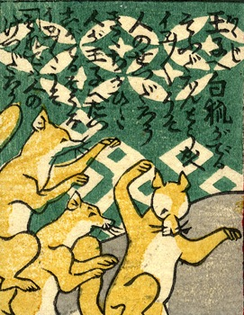

狐；キツネ

3体の狐が踊っている。詞書には「王子へ白狐がでるそうだ。本当かえ。イエイエうそ。人の節だろう。聞き違いだ。人が王子へたつこがでるそうな。イエイエうそ。それでは人のけつだろう。」とある。
著作者：芳幾近二／出典：親書誌：U426_nichibunken_0229：新作おばけ野噺；シンサクオバケノバナシ／日付：2010／資源識別子：U426_nichibunken_0229_0020_0000
Copyright (c)2010- International Research Center for Japanese Studies, Kyoto, Japan. All rights reserved.